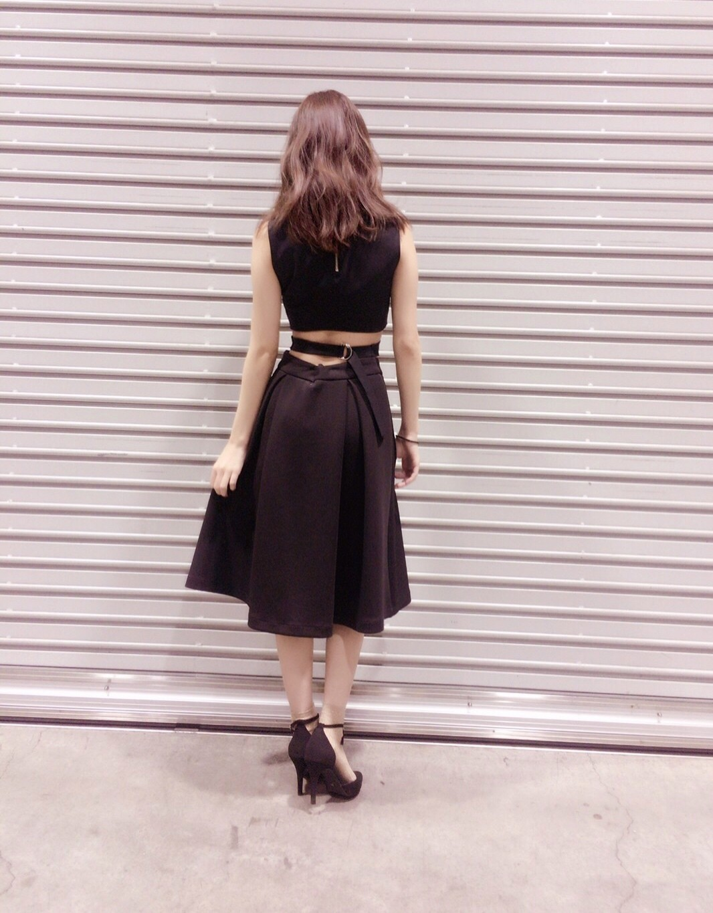
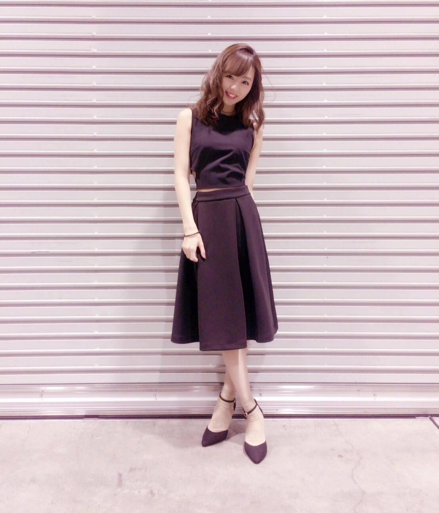
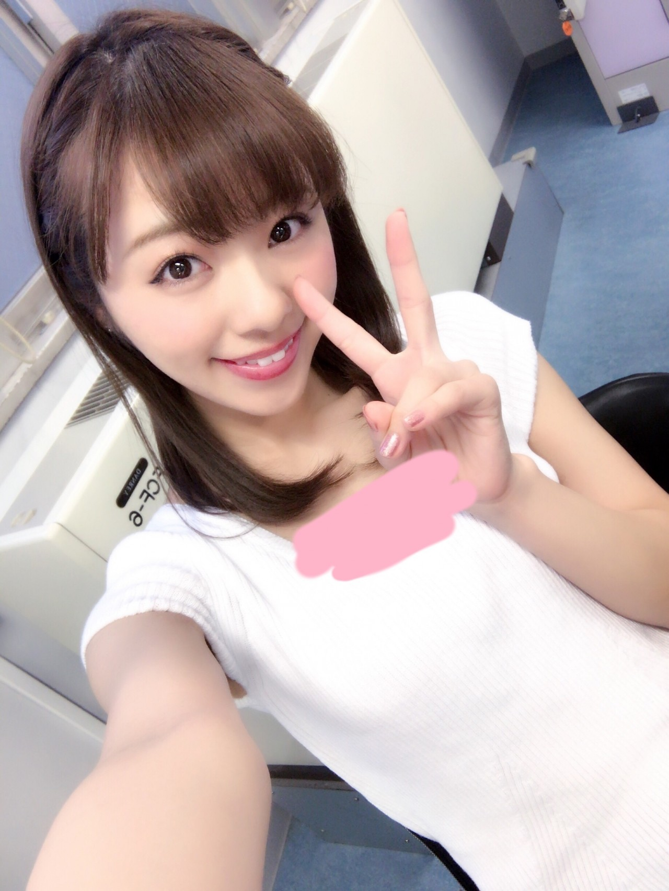

こんにちわ♡
ろってぃーです！
昨日は握手会でした.＊
お越しくださった皆様ありがとうございました．今回の私服です♡
後ろ

前

ここ最近は，レモン色や淡いピンクだったりが多かったので大人目で．
そしてそして私ろってぃーは
17thの個別握手会から，握手に加え、&「ジャンケン大会」を実施しております♪♪♪
るんるん。
握手会でジャンケン？？
って感じですよね、、、、
説明致しますと...
ろってぃーブースに入る前に
若いお兄様かお姉様に「握手かジャンケンどっちにします？？？」と聞かれます‼︎
なのでとりあえずどっちか答えてください‼︎笑 例えば、「ジャンケンで‼︎」と言いますと，ろってぃーとジャンケンができ...
勝つと【サイン入り写真&乃木團缶バッチ】をプレゼント‼︎
負けると【ろってぃーのサイン入りシール】をプレゼント‼︎
と言う形でやっています(*^◯^*)
今までとは少し違った握手会‼︎
かなり楽しんでます♡♡
そして次に発売を決定しているアルバムの個別握手会！！！
チェックチェック～♪♪
ここでも「握手&ジャンケン」を実施する予定なので，『まだ握手会行ったことないよ～』って方も是非‼︎ 来てくださいね♡？
お待ちしております‼︎

（純奈に借りた服の胸元がゆるくて...笑 ） でも貸してくれて助かったの．
アンダラの当日リハ中に，漫画の様に私の服がちぎれたの 笑
以上‼︎♡ ろってぃーでした．
また更新します‼︎